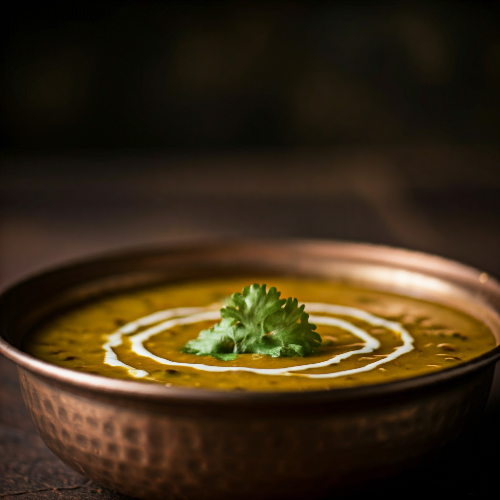

Dal makhani
Price: 60 /-
Description: Dal Makhani is a rich and creamy North Indian dish made with whole black lentils (urad dal) and kidney beans (rajma) slow-cooked with aromatic spices. The dish gets its signature creamy texture and deep flavor from a combination of butter (makhan) and cream, added generously during the cooking process. The lentils and beans are soaked overnight, cooked until tender, and simmered with a base of tomatoes, onions, garlic, ginger, and spices like cumin, garam masala, and chili powder. Dal Makhani is traditionally slow-cooked for hours to enhance its smoky, velvety taste and is best served with naan, paratha, or steamed basmati rice, making it a beloved dish in Indian cuisine.
Order Now